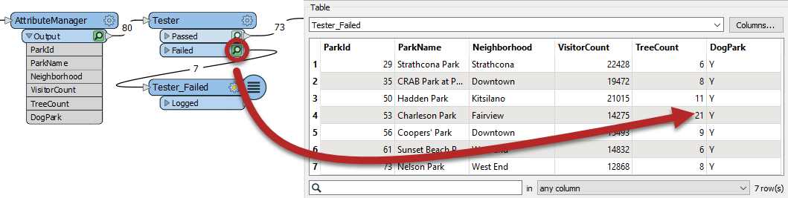

After completing this unit, you’ll be able to:
Your team is responsible for maintaining parks and other grassed areas needs to know the area and facilities of each park to plan their budget for the upcoming year.
In this part of the project, we’ll filter out dog parks from the source data, as these have a different scale of maintenance costs. We'll then inspect our data to ensure the parks were filtered correctly.
1) Start FME Workbench
Start FME Workbench (2022.0 or later) and open the starting workspace. This workspace reads in parks MapInfo TAB data, slightly edits the schema using the AttributeManager, and then writes it back out to MapInfo TAB.
2) Add a Tester Transformer
Now we should remove dog parks from the data because these have their own set of costs.
We can do this with a Tester transformer. Click on the connection from the AttributeManager output port to the ParksMaintenanceData feature type on the Writer.
Start typing the word Tester. When you spot the Tester transformer, double-click on it to add one to the workspace. After tidying up the layout of the canvas, the workspace will now look like this:

Notice that the Passed output port is the one connected by default.
3) Set the Tester Parameters
Inspect the parameters for the Tester transformer. Click in the Left Value field and from there click the down arrow and choose Attribute Value > DogPark:

For the Right Value click into the field and type the value N. The operator field should be filled in automatically as the equals sign (=), which is what we want in this case.

Click OK to accept the values and close the dialog.
4) Run Workspace
Save and run the workspace.
To confirm it ran correctly, you should have 73 features coming from the Tester:Passed output port and 7 from the Tester:Failed output port. You can inspect the failed features by clicking the feature cache icon to confirm these are, in fact, the dog parks:
